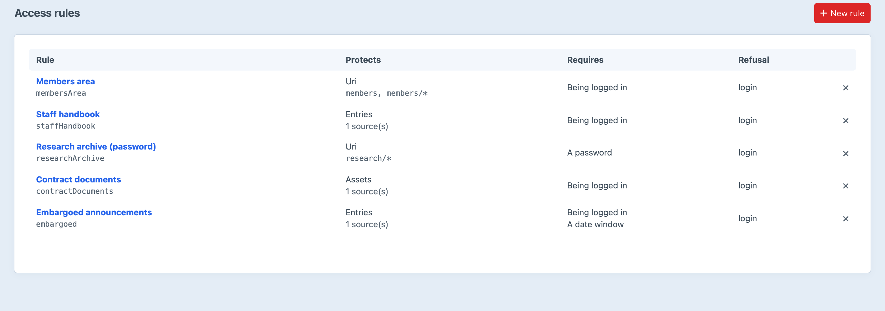
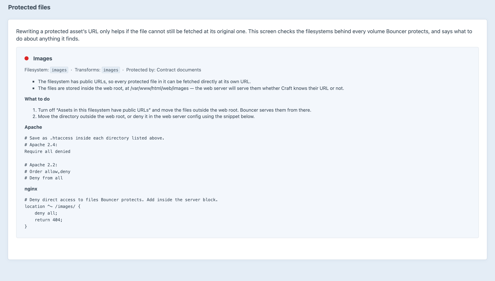

Who may see what. In one place.
Sections, entries, categories, front-end URIs — and the asset files that every other access plugin leaves sitting at their original URL.
The entry 403s and the PDF still downloads. Bouncer rewrites the URL, transform and all, and re-checks access on every hit — the URL itself is never the authority.
Content leaks from four places, so all four ask the same question of the same service.
This content, for these people, otherwise that. Top to bottom, in that order.
The half that is usually skipped, and the reason the plugin exists.
Nothing the plugin does can stop a web server serving a file it can see.
Does an anonymous visitor still get the members index? Ask, in the deploy check.
What is protected, who gets through, and what a refused visitor sees.

Every volume a rule protects, checked against the filesystem underneath it.
